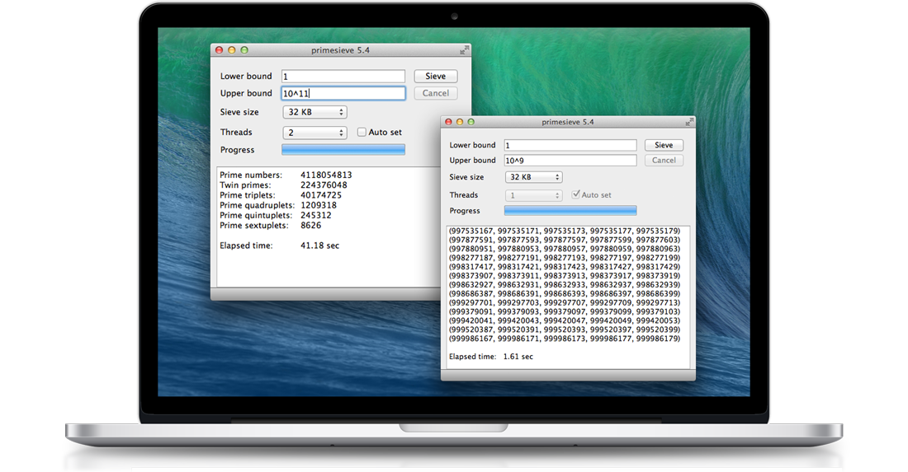
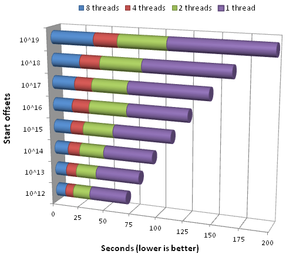

About
primesieve is a free software program and C/C++ library that generates primes using a highly optimized sieve of Eratosthenes implementation. It counts the primes below 10^10 in just 0.45 seconds on an Intel Core i7-6700 CPU (4 x 3.4GHz). primesieve can generate primes and prime k-tuplets up to 2^64.
{kind=link}
Performance
primesieve generates primes about 50 times faster (single-threaded) than an ordinary C/C++ sieve of Eratosthenes implementation and about 10,000 times faster than trial-division. primesieve outperforms the author's older ecprime (fastest open source prime number generator from 2002 to 2010) by about 30 percent and also substantially outperforms primegen the fastest sieve of Atkin implementation on the web. Here is a historical list of fast prime sieve implementations.
Timings
| x | Prime Count |
AMD Phenom II X4 945 (4 x 3.0GHz, 64K L1 Data Cache) |
Intel Core i7-6700 (4 x 3.4GHz, 32K L1 Data Cache) |
IBM POWER8 (22 x 3.0GHz, 64K L1 Data Cache) |
| 107 | 664,579 | 0.00s | 0.00s | 0.00s |
| 108 | 5,761,455 | 0.01s | 0.01s | 0.01s |
| 109 | 50,847,534 | 0.06s | 0.05s | 0.07s |
| 232 | 203,280,221 | 0.54s | 0.19s | 0.15s |
| 1010 | 455,052,511 | 0.66s | 0.45s | 0.24s |
| 1011 | 4,118,054,813 | 8.57s | 5.60s | 1.72s |
| 1012 | 37,607,912,018 | 122.02s | 68.55s | 19.34s |
| 1013 | 346,065,536,839 | 1664.68s | 816.62s | 225.92s |
The above benchmarks were run on Linux, for each
benchmark primesieve used all available CPU cores and the sieve
size was set to the CPU's L1 data cache size.
CPU scaling
primesieve scales linearly up to a very large number of CPU cores (if the interval is sufficiently large). The above benchmark was run on a system with 8 physical CPU cores, at each start offset the primes inside an interval of size 10^11 were counted using different numbers of threads.
Algorithms
primesieve generates primes using the segmented sieve of Eratosthenes with wheel factorization, this algorithm has a complexity of operations and uses space.
Segmentation is currently the best known practical improvement to the sieve of Eratosthenes. Instead of sieving the interval [2, n] at once one subdivides the sieve interval into a number of equal sized segments that are then sieved consecutively. Segmentation drops the memory requirement of the sieve of Eratosthenes from to . The segment size is usually chosen to fit into the CPU's fast L1 or L2 cache memory which significantly speeds up sieving. A segmented version of the sieve of Eratosthenes was first published by Singleton in 1969 [1]. Here is a simple implementation of the segmented sieve of Eratosthenes.
Wheel factorization is used to skip multiples of small primes. If a kth wheel is added to the sieve of Eratosthenes then only those multiples are crossed off that are coprime to the first k primes, i.e. multiples that are divisible by any of the first k primes are skipped. The 1st wheel considers only odd numbers, the 2nd wheel (modulo 6) skips multiples of 2 and 3, the 3rd wheel (modulo 30) skips multiples of 2, 3, 5 and so on. Pritchard has shown in [2] that the running time of the sieve of Eratosthenes can be reduced by a factor of if the wheel size is but for cache reasons the sieve of Eratosthenes usually performs best with a modulo 30 or 210 wheel. Sorenson explains wheels in [3].
Additionally primesieve uses Tomás Oliveira e Silva's
cache-friendly bucket list algorithm
if needed [4]. This algorithm is relatively new, it has
been devised by Tomás Oliveira e Silva in 2001 in order to speed up
the segmented sieve of Eratosthenes for prime numbers past 32 bits.
The idea is to store the sieving primes into lists of buckets with
each list being associated with a segment. A list of sieving primes
related to a specific segment contains only those primes that have
multiple occurrence(s) in that segment. Whilst sieving a segment only
the primes of the related list are used for sieving and each prime is
reassigned to the list responsible for its next multiple when
processed. The benefit of this approach is that it is now possible to
use segments (i.e. sieve arrays) smaller than
 without deteriorating efficiency, this is important as only small
segments that fit into the CPU's L1 or L2 cache provide fast memory
access.
without deteriorating efficiency, this is important as only small
segments that fit into the CPU's L1 or L2 cache provide fast memory
access.
Implementation
primesieve is written entirely in C++ and does not depend on external libraries. It's speed is mainly due to the segmentation of the sieve of Eratosthenes which prevents cache misses when crossing off multiples in the sieve array and the use of a bit array instead of a boolean sieve array. primesieve reuses and improves ideas from other great sieve of Eratosthenes implementations, namely Achim Flammenkamp's prime_sieve.c, Tomás Oliveira e Silva's A1 implementation and the author's older ecprime all written in the late '90s and '00s. Furthermore primesieve contains new optimizations to increase instruction-level parallelism and more efficiently uses the larger number of registers in today's CPUs.
Optimizations used in primesieve
- Uses a bit array with 8 flags each 30 numbers for sieving
- Pre-sieves multiples of small primes ≤ 19
- Compresses the sieving primes in order to improve cache efficiency [5]
- Starts crossing off multiples at the square
- Uses a modolo 210 wheel that skips multiples of 2, 3, 5 and 7
- Uses specialized algorithms for small, medium and big sieving primes
- Uses a custom memory pool (for big sieving primes)
- Processes multiple sieving primes per loop iteration to increase instruction-level parallelism
- Parallelized (multi-threaded) using OpenMP
Highly optimized inner loop
primesieve's inner sieving loop has been optimized using
extreme loop unrolling,
on average crossing off a multiple uses just 1.375 instructions on
x64 CPUs. Below is the assembly GCC generates for primesieve's inner
sieving loop, each andb instruction unsets a bit (crosses
off a multiple) in the sieve array.
This README file contains more technical implementation details.
C/C++ library
Below is an example that shows how to generate primes in C++ using libprimesieve. All of primesieve's functions are also exposed as C API. You can browse primesieve's API online.
The Build From Source page explains how to build libprimesieve and how to link against it.
Bindings for other languages
primesieve supports C++ and C directly, and has bindings available for a few other programming languages:
| Python: | primesieve-python |
| Ruby: | primesieve-ruby |
Many thanks to the developers of these bindings!
References and notes
- R. C. Singleton, "An efficient prime number generator", Communications of the ACM 12, 563-564, 1969.
- Paul Pritchard, "Fast compact prime number sieves (among others)", Journal of Algorithms 4 (1983), 332-344.
- Jonathan Sorenson, "An analysis of two prime number sieves", Computer Science Technical Report Vol. 1028, 1991.
- Tomás Oliveira e Silva, "Fast implementation of the segmented sieve of Eratosthenes", 2002.
- Actually not the sieving primes are compressed but their sieve and wheel indexes.